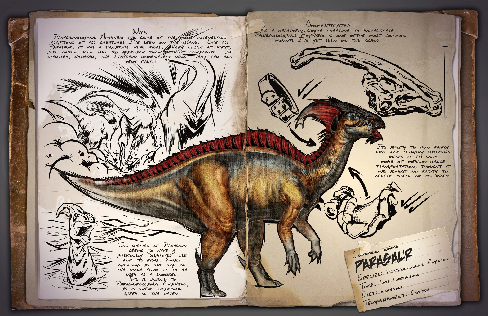
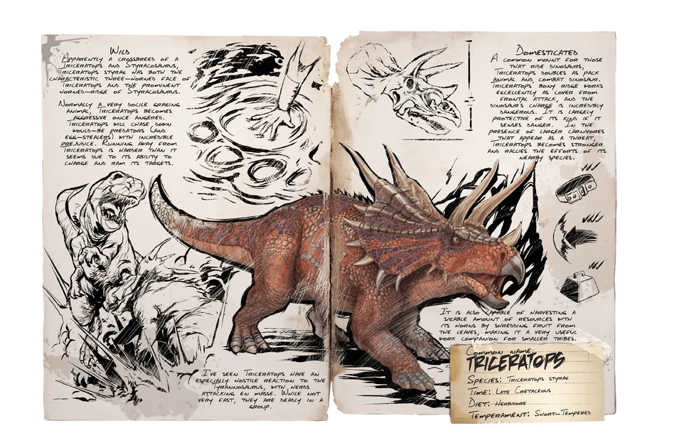
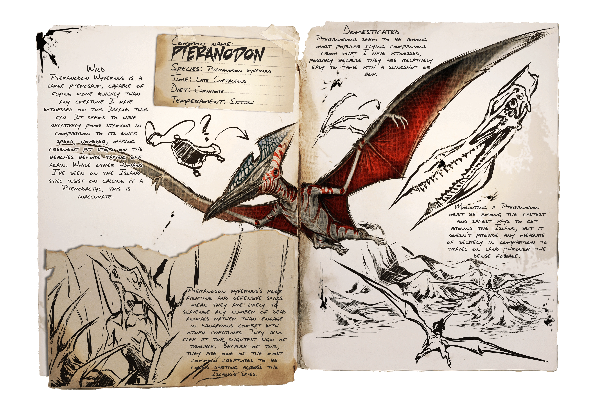

Dodo
Ideal para empezar. Proporciona huevos y carne fácil.

Parasaurio
Sirve para transporte y detección de criaturas cercanas.

Trike
Muy útil para recolectar bayas y defenderse.

Pteranodon
Primer dinosaurio volador. Ideal para explorar.